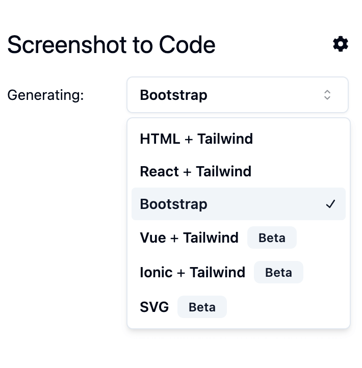
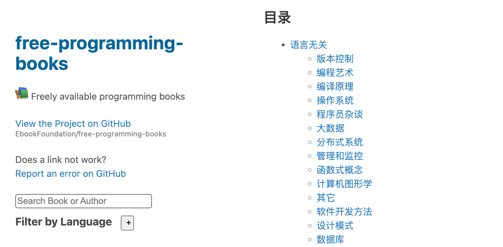

13.5k star, 免费开源 Markdown 编辑器
项目名: Editor.md -- Markdown 编辑器 Github 开源地址： https://github.com/pandao/editor.md ...

31.2k star, 免费开源的白板绘图工具 tldraw
项目名: tldraw -- 无限画布白板 Github 开源地址： https://github.com/tldraw/tldraw ...

Dev Home — 免费开源的微软开发者工具
项目名: Dev Home -- 微软平台的一站式开发助手 Github 开源地址： https://github.com/microsoft/d...

11.2k star, 免费开源的 API 测试工具 Bruno
项目名: bruno -- 开源 IDE 用于测试 API Github 开源地址： https://github.com/usebruno/bruno ...

3.6k star, 免费开源跨平台的数据库管理工具 dbgate
项目名: dbgate -- 免费开源跨平台的数据库管理工具 Github 开源地址： https://github.com/dbgate/...

13.2k star, 高生产力的低代码开发平台 lowcode-engine
项目名: lowcode-engine -- 高生产力的低代码研发平台 Github 开源地址： https://github.com/aliba...

64.8k star, 免费开源的绘图工具 excalidraw
项目名: excalidraw -- 绘制手绘图的虚拟白板 Github 开源地址： https://github.com/excalidraw/ex...

33.8k star, 将截图直接生成 HTML 页面 screenshot-to-code
项目名: screenshot-to-code -- 将截图转换为 HTML 代码 Github 开源地址： https://github.com/abi...

307k star, 免费的编程书籍 free-programming-books
项目名: free-programming-books -- 各种编程语言免费学习资源 Github 开源地址： https://github.c...

43.1k star, 免费开源的 markdown 编辑器 MarkText
项目名: MarkText -- 简单而优雅的开源 Markdown 编辑器 Github 开源地址： https://github.com/mar...